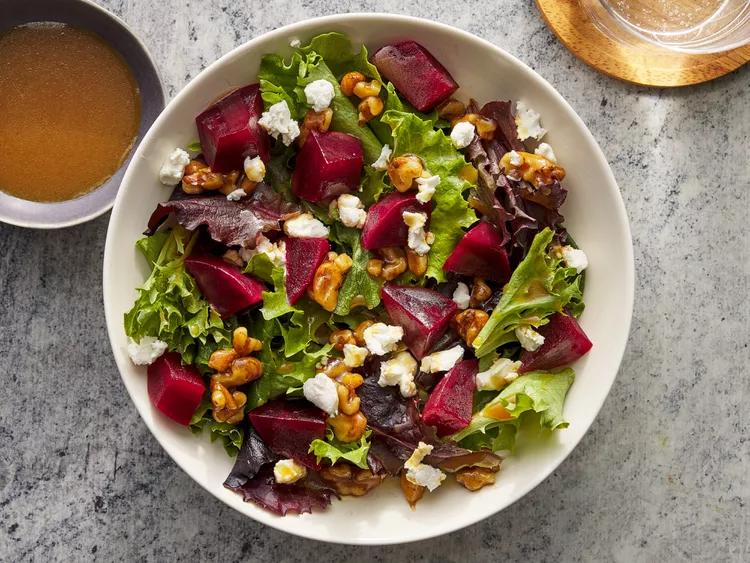

Beet Salad recipe

This is a delicious and easy beet salad with creamy goat cheese,
maple-candied walnuts, mixed baby greens, and
a tangy balsamic dressing which is spectacular for a fall or winter meatless main course.
Ingredients
- 4 medium beets-scrubbed, trimmed and cut in half
- ⅓ cup chopped walnuts
- 3 tablespoons maple syrup
- 1 (10 ounce) package mixed baby salad greens
- ½ cup frozen orange juice concentrate
- ¼ cup balsamic vinegar
- ½ cup extra-virgin olive oil
- 2 ounces goat cheese
Directions
Step 1
- Place beets into a saucepan, and fill with enough water to cover. Bring to a boil,
then cook for 20 to 30 minutes, until tender. Drain and cool, then cut in to cubes.
Step 2
- While the beets are cooking, place the walnuts in a skillet over medium-low heat.
Heat until warm and starting to toast, then stir in the maple syrup.
Cook and stir until evenly coated, then remove from the heat and set aside to cool.
Step 3
- In a small bowl, whisk together the orange juice concentrate, balsamic vinegar and olive oil to make the dressing.
Step 4
- Place a large helping of baby greens onto each of four salad plates, divide candied walnuts equally and sprinkle over the greens.
Place equal amounts of beets over the greens, and top with pieces of goat cheese. Drizzle each plate with some of the dressing.